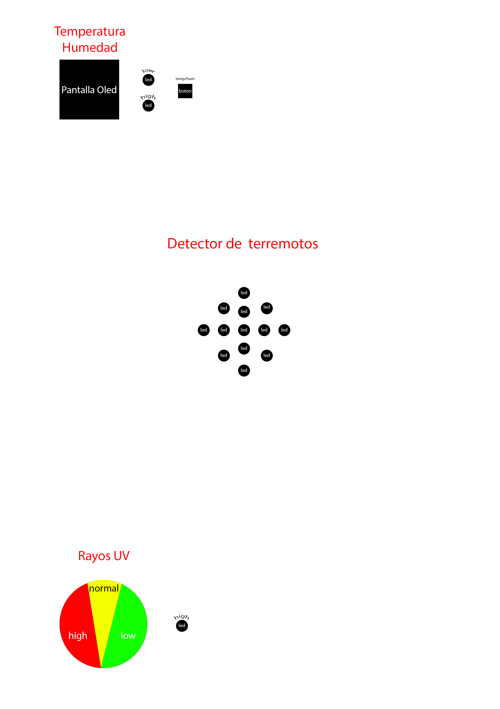

Caja
Este Blackfriday me compré unas zapas Nike y a partir de ver las asas de la caja me empecé a imaginar el producto final del proyecto. Para plasmar esa idea, se me ocurrió hacerme un molde con Photoshop ya que puedes editar una hoja din A4 en milímetros. Para ello empecé a medir componente a componente. Al finalizar el molde, imprimí una prueba para que todo quepa como debe. Después de varios retoques, el molde me quedo simple, pero si todo iba como imaginaba quedaría muy chulo.
Molde
Una vez terminé, tenía que pegar la hoja del molde en la caja de manera que no se rompa. Para ello utilicé un adhesivo grande para pegarlo en la caja. Me costó 3 intentos, pero al final me quedo pegado perfectamente.